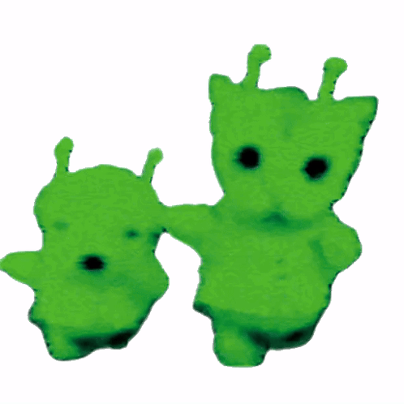

Sistema de Gestión Veterinaria
- Género:
- Sistema de gestión
- Motor:
- C++
- Contexto:
- Trabajo Practico Integrador | Programación II
- Rol:
- Colaboradora
Sistema de gestión veterinaria en C++ con POO, archivos binarios y módulos de pacientes, turnos e historial clínico.